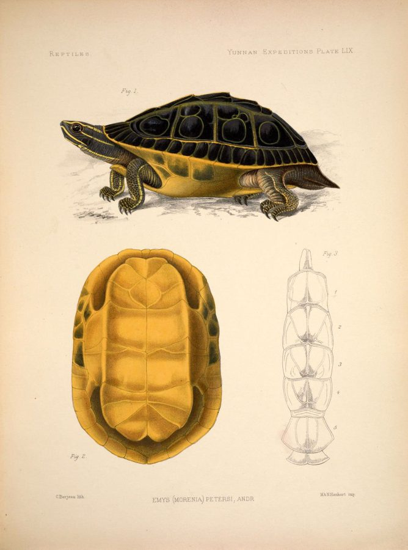

इंडियन आइड कछुआIndian Eyed Turtle
Morenia petersi · Geoemydidae · REP-0050

- Scientific name वैज्ञानिक नाम
- Morenia petersi (Anderson, 1879)
- Family कुल
- Geoemydidae
- Hindi हिंदी
- इंडियन आइड कछुआ
- Local names स्थानीय नाम
- indian eyed turtle, eyed turtle, chashmedar kachhua, peters turtle
- Status here यहाँ की स्थिति
- native
- Movement आवागमन
- Resident, here all year
- Known from कहाँ दर्ज
- Others have published records from the Basti–Ayodhya districts बस्ती–अयोध्या के ज़िलों से दूसरों के प्रकाशित अभिलेख
- IUCN IUCN
- not evaluated
- Review समीक्षा
- not yet reviewed
When to look कब देखें
Present all year. साल भर मौजूद।
Tell it apart from इनसे अलग पहचानें
इंडियन आइड कछुआ / Indian Eyed Turtle
Morenia petersi (Anderson, 1879) — Geoemydidae
इंडियन आइड कछुआ — यह गंगा और ब्रह्मपुत्र के मैदानों के बड़े तालों, कमल के पोखरों और दलदली झीलों में पाया जाने वाला एक सुंदर शाकाहारी कछुआ है। इसके ऊपरी खोल पर आंख जैसे गोल छल्ले बने होते हैं और गर्दन के दोनों तरफ तीन समानांतर पीली लकीरें होती हैं। इसका मुंह आगे से नुकीला चोंच जैसा होता है। यह जलकुंभी, कमल और जलीय घासों के बीच रहकर हरी पत्तियां खाता है।
Quick Identification त्वरित पहचान
| Feature | Description |
|---|---|
| Carapace shape | Moderately domed, smooth oval shell, olive-green to dark brown |
| Dorsal markings | Each costal scute carries an eye-like ocellus (a dark center surrounded by a narrow yellowish ring) |
| Vertebral stripe | A narrow, distinct yellowish or pale green stripe runs continuously along the spine (Smith 1931) |
| Head markings | Dark olive head adorned with three distinct, narrow yellowish stripes along each side of the neck |
| Snout | Prominently pointed, projecting forward into an acute beak-like profile |
| Plastron | Large, unhinged, pale yellow or cream with dark brown blotches on the shields |
Field tip: Scan floating mats of water hyacinth (Eichhornia crassipes) and water lily pads in quiet oxbow lakes on sunny winter mornings.
हिंदी: इसके खोल की पसलियों पर आंख जैसे गोल छल्ले बने होते हैं। गर्दन पर दोनों तरफ तीन पीली धारियां होती हैं और थूथन आगे से नुकीली चोंच जैसी होती है।
Morphology आकारिकी
Biometrics as given by Smith (1931):
| Measurement | Value | Source |
|---|---|---|
| Carapace length | 125 mm (male), 183 mm (female) | Smith (1931) |
| Carapace width | 85 mm (male), 125 mm (female) | Smith (1931) |
The carapace is moderately domed, smooth, with rounded lateral margins and an unnotched posterior border. A low, interrupted median keel is present on the vertebral scutes, becoming faint with age. The nuchal scute is narrow and elongated. The plastron is large, flat, and rigidly united to the carapace by a strong bridge, with well-developed axillary and inguinal buttresses. The snout is characteristically acute and distinctly pointed, projecting well beyond the lower jaw. The upper jaw is notched medially and finely serrated along the lateral biting edges, an adaptation for snipping aquatic vegetation (Tikader & Sharma 1985). Digits are fully webbed to the claws.
हिंदी: इसका ऊपरी खोल गोल और चिकना होता है। जबड़े के किनारे बारीक आरी की तरह दांतेदार होते हैं जिससे यह जलीय पौधों को आसानी से काटती है। पैरों की उंगलियों में तैरने वाली झिल्ली होती है।
Behaviour & Ecology व्यवहार और पारिस्थितिकी
This turtle is a specialist grazer of slow-flowing or standing freshwater wetlands with dense floating and submerged vegetation, such as oxbow lakes (tals), marshes, lotus ponds, and stagnant irrigation ditches. It is shy and secretive, rarely venturing far onto dry land except for nesting. It spends most of the day concealed beneath floating weed mats, surfacing periodically to breathe. During the cooler winter months, it clambers onto floating vegetation rafts, fallen reeds, or emergent logs to bask in the sun, plunging instantly into dense weed beds if approached by boats or people.
हिंदी: यह बहुत शर्मीला कछुआ है जो पानी की सतह पर तैरती घासों और कमल के पत्तों के नीचे छिपा रहता है। ठंड के दिनों में यह तैरती हुई घासों पर बैठकर धूप सेकता है और हल्की आहट पर तुरंत पानी में डूब जाता है।
Life Cycle / Phenology जीवन चक्र
Breeding activity is concentrated in the post-monsoon and early winter months from September to December. Courtship takes place among submerged weed tangles. The female deposits eggs on elevated muddy banks or grassy ditch margins adjoining the wetland. Clutches are relatively small, typically comprising 2 to 6 elongated, hard-shelled white eggs (Tikader & Sharma 1985). Eggs incubate through the winter and hatch in spring as ambient temperatures rise, with hatchlings entering the sheltering nursery habitat of aquatic plant beds.
हिंदी: सर्दियों की शुरुआत में इनका प्रजनन होता है। मादा पानी के किनारे मिट्टी की मेड़ पर 2 से 6 लंबे सफेद कड़े खोल वाले अंडे देती है। वसंत ऋतु में अंडों से बच्चे बाहर आते हैं।
Host Plants or Prey आहार
The Indian eyed turtle is almost exclusively herbivorous throughout its adult life. It feeds on a diverse variety of submerged and floating aquatic macrophytes, including Hydrilla verticillata, Vallisneria spiralis, duckweed (Lemna), and the roots and tender shoots of water hyacinth (Eichhornia crassipes). It also grazes on water lily stems (Nymphaea and Nelumbo) and filamentous green algae. Juveniles occasionally supplement their diet with small aquatic insects and snails.
हिंदी: यह पूरी तरह शाकाहारी कछुआ है जो पानी में उगने वाली हाइड्रिला, वलिसनेरिया, जलकुंभी की कोमल जड़ें, कमल की नाल और हरी काई खाता है।
Predators / Natural Enemies शत्रु
Young turtles and eggs are preyed upon by predatory marsh birds, herons, and the Black Kite (Milvus migrans). Semi-aquatic predators such as the Checkered Keelback (Fowlea piscator) swallow small hatchlings. Golden jackals (Canis aureus) and monitor lizards like the Bengal Monitor (Varanus bengalensis) excavate nests on wetland margins. Adult turtles occasionally fall prey to large Indian Python (Python molurus) and marsh crocodiles.
हिंदी: पनिहा सांप, बगुले और चील इसके छोटे बच्चों को पकड़ते हैं। सियार और गोह तालाब के किनारों से इसके अंडों को खोदकर खा जाते हैं। बड़े कछुओं को अजगर निगल सकते हैं।
Agricultural / Human Relevance कृषि प्रासंगिकता
In the agrarian wetlands of eastern Uttar Pradesh, this turtle performs a valuable ecological service by grazing heavily on nuisance aquatic vegetation, helping keep irrigation channels, village canals, and drainage lines clear of choking weed overgrowths. It poses no threat to crops or livestock. It is protected under the Wildlife (Protection) Act 1972. Wetland drainage and the excessive clearance of aquatic flora for commercial fish farming represent the main pressures on local populations.
हिंदी: यह सिंचाई की नालियों और तालाबों में अत्यधिक घास और जलकुंभी को खाकर पानी के बहाव को बनाए रखने में मदद करता है। यह वन्यजीव संरक्षण कानून के तहत पूरी तरह संरक्षित है।
Expected Locally स्थानीय रूप से अपेक्षित
Not a field record. Written from published accounts for eastern Uttar Pradesh. No confirmed local sighting yet — if you have seen it, that is what the atlas needs.
अभी तक स्थानीय पुष्टि नहीं। यह विवरण प्रकाशित स्रोतों से है, किसी अवलोकन से नहीं।
In Basti and Ayodhya districts, optimal search localities include extensive weed-rich wetlands such as Bakhira Bird Sanctuary, oxbow cut-offs of the Manorama and Kuwana rivers, and perennial village tals with dense aquatic flora. Searching with binoculars during calm, sunny winter mornings during sunny morning hours along reed margins yields the best chances of sighting basking individuals. GBIF holds published records from these districts. A first confirmed record requires a photograph showing the ringed costal spots and three lateral head stripes submitted to the project portal.
Distribution वितरण
Global range: Endemic to northern South Asia, found in the Ganga and Brahmaputra river basins across India, Bangladesh, and southern Nepal.
In India: Distributed across the plains of Uttar Pradesh, Bihar, West Bengal, and Assam.
In Uttar Pradesh: Recorded from wetland complexes, oxbow lakes, and floodplain marshes across eastern and central districts.
In Basti district / eastern UP: Expected in perennial marshes, tals, and oxbow lakes throughout the Bakhira basin and Kuwana floodplain.
हिंदी: यह गंगा और ब्रह्मपुत्र के मैदानों, विशेष रूप से उत्तर प्रदेश, बिहार, पश्चिम बंगाल और असम की नमभूमियों में पाई जाती है। अवध की झीलों और तालों में इसका फैलाव दर्ज है।
Research Questions शोध प्रश्न
- How does the mechanical harvesting of aquatic weeds in commercial fisheries affect food availability for this herbivorous turtle? / व्यावसायिक मत्स्य पालन के लिए तालाबों से घास हटाने पर इस शाकाहारी कछुए के भोजन पर क्या असर पड़ता है?
- What are the specific thermal requirements for egg incubation in clay-loam wetland banks during northern winter? / तराई की सर्दियों में मिट्टी में अंडों के पकने के लिए किस तापमान की आवश्यकता होती है?
- How do populations partition wetland microhabitats with sympatric Indian Roofed Turtle in dense macrophyte zones?
- What is the impact of seasonal wetland desiccation due to agricultural irrigation pumping on turtle survivorship?
- Can local wetland birdwatchers help map basking sites of eyed turtles during annual waterfowl censuses? / क्या पक्षी प्रेमी सर्दियों की पक्षी गणना के दौरान इस कछुए की धूप सेकने की जगहों को दर्ज कर सकते हैं?
Similar Species मिलती-जुलती प्रजातियाँ
| Species | How to tell apart | हिंदी | |
|---|---|---|---|
| Indian Roofed Turtle \ | Pangshura tecta | Features a high peaked vertebral spike on the third vertebral scute, and a bright red crescent behind each eye (Smith 1931) | पचेरा कछुए की पीठ पर एक नुकीला कांटा होता है और आंख के पीछे लाल अर्धचंद्र निशान होता है |
| Brown Roofed Turtle \ | Pangshura smithii | Depressed brownish carapace with a dark vertebral stripe; lacks ringed ocelli on costal scutes | ब्राउन रूफ्ड कछुए की पीठ चपटी होती है और इसके खोल पर आंख जैसे गोल छल्ले नहीं होते |
| Black Pond Turtle \ | Geoclemys hamiltonii | Jet-black carapace with 3 yellow nodular keels; head is black with dense yellow spots all over | ब्लैक पॉन्ड कछुए का खोल काला होता है जिस पर तीन गांठदार धारियां और सिर पर पीले धब्बे होते हैं |
Field rule: Domed freshwater turtle with eye-like ringed spots on each costal shield, a pointed snout, and three pale yellow stripes along each side of the neck.
हिंदी: खोल की पसलियों पर आंख जैसे गोल छल्ले, नुकीली थूथन और गर्दन पर तीन पीली धारियों वाला मीठे पानी का कछुआ।
Taxonomy & Classification वर्गीकरण
Original description. Anderson (1879), Anatomical and Zoological Researches: Comprising an Account of the Zoological Results of the Two Expeditions to Western Yunnan, Vol. I, p. 761; type locality: Hasunpore, Jessore, Bengal (now Bangladesh).
Subspecies. Monotypic; no subspecies are currently recognised across its Gangetic and Brahmaputra distribution.
Family and order placement. Placed in the genus Morenia Gray, 1870, family Geoemydidae, order Testudines.
Phylogenetic notes. Sister to Morenia ocellata of Myanmar, representing an ancient South Asian aquatic geoemydid lineage specialized for herbivorous grazing in sluggish lowland waters.
IUCN status rationale. Not evaluated by the IUCN Red List; recognized regionally as Vulnerable due to wetland drainage, agrochemical pollution, and loss of macrophyte-rich habitats.
हिंदी: जॉन एंडरसन ने 1879 में बंगाल के जेसोर से इसका पहला वैज्ञानिक विवरण दिया था। यह मोरेनिया वंश का सदस्य है।
Photo Gallery फोटो गैलरी
No photos yet — add field photos to media/species/indian_eyed_turtle/ and run node scripts/sync_photos.js.
Photos needed आवश्यक फोटो
- [ ] Habitat view showing typical local microhabitat (प्राकृतिक वास का विस्तृत परिदृश्य)
- [ ] Dorsal view showing ringed eye-like ocelli on costal scutes (खोल की पसलियों पर आंख जैसे गोल छल्लों का दृश्य)
- [ ] Profile of head showing pointed snout and three yellow neck stripes (नुकीली थूथन और गर्दन की तीन पीली धारियों का दृश्य)
- [ ] Individual basking on floating vegetation mat (तैरती जलीय घास पर धूप सेकता कछुआ)
References संदर्भ
- Original description: Anderson, 1879 — see GBIF.
- Smith, M. A. (1931). The Fauna of British India, Including Ceylon and Burma. Reptilia and Amphibia. Vol. I.—Loricata, Testudines. Taylor and Francis, London.
- Tikader, B. K. & Sharma, R. C. (1985). Handbook: Indian Testudines. Zoological Survey of India, Calcutta.
- GBIF Occurrence Data — Morenia petersi, India (2025).
Source file: species/fauna/reptiles/indian_eyed_turtle.md